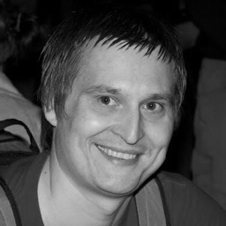

О проекте
Javascript.ru был запущен в 2007 году и с тех пор стал одним из крупнейших русскоязычных порталов по JavaScript. Текст учебника и код для его запуска находятся в открытом доступе.
Контакты
Команда
- Илья КанторОснователь, тренер, JS-разработчик
- Алексей МаксимовАдмин
- Артем БезценныйДизайнер
- Анна БаньковскаяВёрстка
 Михаил ГринькоПреподаватель
Михаил ГринькоПреподаватель Степан СуворовПреподаватель
Степан СуворовПреподаватель Роман ЯкобчукПреподаватель
Роман ЯкобчукПреподаватель Игорь НепипенкоПреподаватель
Игорь НепипенкоПреподаватель
Баг или опечатка?
Если у вас есть идеи, как улучшить содержимое сайта, пожалуйста, напишите в наш github.
Помогите нам с переводом
Мы хотим сделать этот проект с открытым исходным кодом доступным для людей во всем мире. Пожалуйста, помогите нам перевести это руководство на свой язык
% – количество контента, переведенное на соотвествующий язык